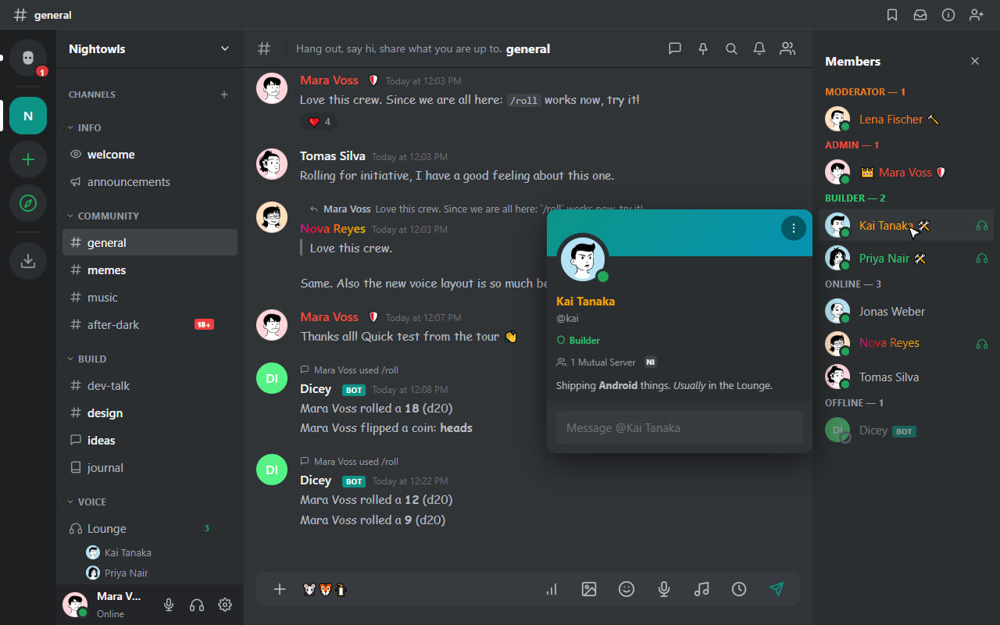
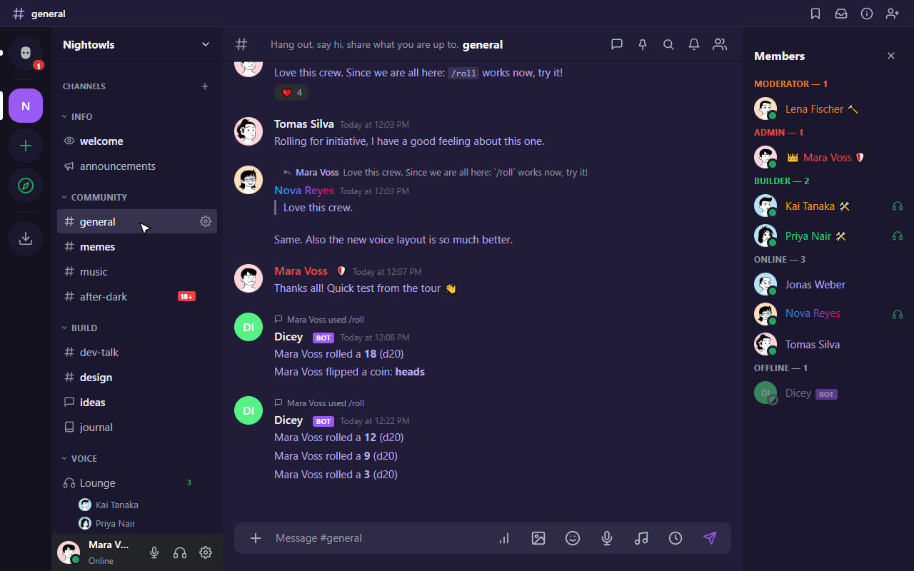

Profilok, státusz és témák
A profilkártyád, jelenlét és egyéni státusz, értesítési hangok, témák, elrendezés és nyelv.
A profilod
Nyisd meg a Beállításokat a bal alsó fogaskerékkel. Beállíthatsz avatárt, bannerképet vagy -színt, bemutatkozást és megjelenített nevet. A bemutatkozás szerkesztőjében van félkövér, dőlt, szín és emoji gomb. A névre vagy tagra kattintva a profilkártya a név mellett jelenik meg. A saját nevedre kattintva a saját kártyád nyílik meg egy Profil szerkesztése gombbal. Másvalaki kártyáján Üzenet gomb van, és egy gyors üzenet mező, ha neki lehet üzenni (barát, vagy az adatvédelmi beállításai engedik): írj, nyomj Entert, és az üzenet a vele meglévő beszélgetésben megy el, vagy újban, ha még nincs.

Az adatvédelmi beállítások döntik el, ki küldhet neked privát üzenetet, és ki láthatja a profilkártyádat. Azt is megválaszthatod, megjelensz-e a felfedezési könyvtárban.
Jelenlét és egyéni státusz
Válaszd az Online, Tétlen, Ne zavarjanak vagy Láthatatlan lehetőséget, és adj hozzá egyéni státuszt emojival és szöveggel. Az /afk perjeles parancs üzenettel együtt tétlenre állít. Automatikus távol: a Beállítások, Megjelenés alatt (telefonon: Te, Automatikus távol) megadhatsz egy tétlenségi időt másodpercben (telefonon percben), amely után a státuszod magától Tétlenre vált; tevékenységre visszaáll Online-ra. A 0 kikapcsolja. Csak az automatikus váltást vonja vissza, a magad választotta státuszt soha. Hogy az egyes állapotokban mi ér el, azt az értesítési rács adja meg, lásd az Értesítések részt. Az avatarodra kattintva megnyíló menüben az Egyéni státusz szerkeszti, az Egyéni státusz törlése (amíg be van állítva) egy kattintással törli.
Témák
Minden tag a saját kinézetét választja a Beállítások, Megjelenés alatt. Indulj egy előbeállításból és igazítsd a színeket, vagy építs sajátot:
- Előbeállítások: MeshCrowd Dark, MeshCrowd Light, Midnight Purple, Forest, Sunset és High Contrast.
- Színek a márkaszínhez, a sávhoz, az oldalsávhoz, a csevegés hátteréhez és a szöveghez.
- Betűtípusok: alapértelmezett, talpas, egytávolságos és még néhány.
- Csevegés betűtípusa és szövegmérete (akadálymentesítés): külön betűtípus (rendszerbetűk, pl. Arial, Tahoma, Calibri, Times New Roman) és 12–28 px közötti méret, amely csak az üzenetek szövegét és az üzenetmezőt változtatja, a felület többi részét soha.
- Opcionális háttérátmenet (kezdő szín, záró szín és szög) az oldalsáv, a csevegés és a taglista mögött.
- A CSS másolása a témádat kivágatként exportálja, amit más is importálhat.

A témák egyszerű színekre és betűválasztásra vannak validálva. Sosem hordoznak tetszőleges CSS-t, így egy megosztott téma nem tölthet be külső erőforrásokat.
Elrendezés
Húzd a csatornalista és a taglista szélét az átméretezéshez; a méretek a fiókoddal együtt mentődnek. A szerversáv mappákkal rendezhető.
A MeshCrowd megnyitásakor
A Beállítások, Megjelenés alatt választhatod, mit mutasson az alkalmazás induláskor: a Kezdőlapot, vagy a Folytatás onnan, ahol abbahagytam opciót (az utoljára használt szerver és csatorna).
Olvasatlan üzenetek
Ha olyan csatornát vagy privát beszélgetést nyitsz meg, amelyben olvasatlan üzenetek vannak, egy piros vonal a dátummal és egy Új jelvénnyel jelöli az első olvasatlan üzenetet, és a nézet az aljára helyett oda ugrik. A vonal addig marad, amíg a csevegés nyitva van, és legközelebb már nem jelenik meg. Négy beállítás finomhangolja a Beállítások, Megjelenés alatt:
- Az „új üzenetek” vonal: megjelenítés vagy elrejtés.
- Olvasatlan üzenetekkel rendelkező csevegés megnyitásakor: ugrás az első olvasatlan üzenethez, vagy maradás a legutóbbinál.
- A vonal fölött látható üzenetek (0-tól 50-ig): mennyi környezet marad látható az első olvasatlan üzenet fölött az ugrásnál.
- Megnyitáskor betöltött üzenetek (20-tól 100-ig): hány legutóbbi üzenetet tölt be. Ha ennél több az olvasatlan, a vonal a betöltött oldal tetején jelenik meg, a többihez felfelé görgetsz.
A beállítások a fiókoddal együtt mentődnek, így a böngészőben, az asztali alkalmazásban és a telefonos felületen is érvényesek.
A csevegés tetején egy sáv jelzi: N új üzenet HH:MM óta, és felkínálja az Ugrás az első olvasatlanra, az Megjelölés olvasottként és a bezárás lehetőséget. A webes kliensben és az Android alkalmazásban is elérhető.
Nyelv
A felület magyarul és angolul beszél. A nyelvet a beállításokban, vagy a bejelentkező oldal választójából változtathatod. Az adminisztrátorok további nyelveket vehetnek fel az adminpanelen.
Nevek és becenevek
A szerver adhat neked becenevet, amely csak ott látszik. A szerveradminok tagonkénti névszínt állíthatnak be, ami felülírja a szerepkörszínt.
Saját névszín és effekt
A Beállítások, Fiókom oldalon (telefonon Te, Profil) választhatsz névszínt az előre megadottak közül vagy a szabad színválasztóval, és opcionálisan szövegeffektet: szivárvány, színátmenet, ragyogás, neon, pulzálás, csillogás, tűz vagy hullám. Élő előnézet mutatja az eredményt. Az Az effekt testreszabása alatt saját színeket adhatsz meg (legfeljebb ötöt: két szín a teljes szivárvány helyett kétszínű átmenetet ad) és a sebességet másodperc/ciklusban. Akik a csökkentett mozgást kérik, az animáció nélkül látják a színeket.
Hol látszik: a profilkártyádon és a privát üzenetekben mindig a saját megjelenésed szerepel. Szerveren a színes szerepkör erősebb: az ő színe és effektje (lásd a Szerepköröket a Szerverek és csatornák oldalon) felülírja a tiédet, és a moderátortól kapott szín is. Színes szerepkör nélkül a saját színed és effekted látszik.
Szinkron az eszközök között
A beállítások automatikusan követik a fiókodat. A téma, az elrendezés, a nyelv, az értesítési szintek, a privát üzenetek beállításai, a mappák, a becenevek, a barátok és a privát csatornák az összes bejelentkezett eszközödön módosulnak pár pillanat alatt, újratöltés nélkül. Az offline vagy háttérben lévő eszköz újracsatlakozáskor, illetve az előtérbe kerüléskor zárkózik fel. A beállításokban a Többi eszközöm frissítése gomb csak kézi tartalék.